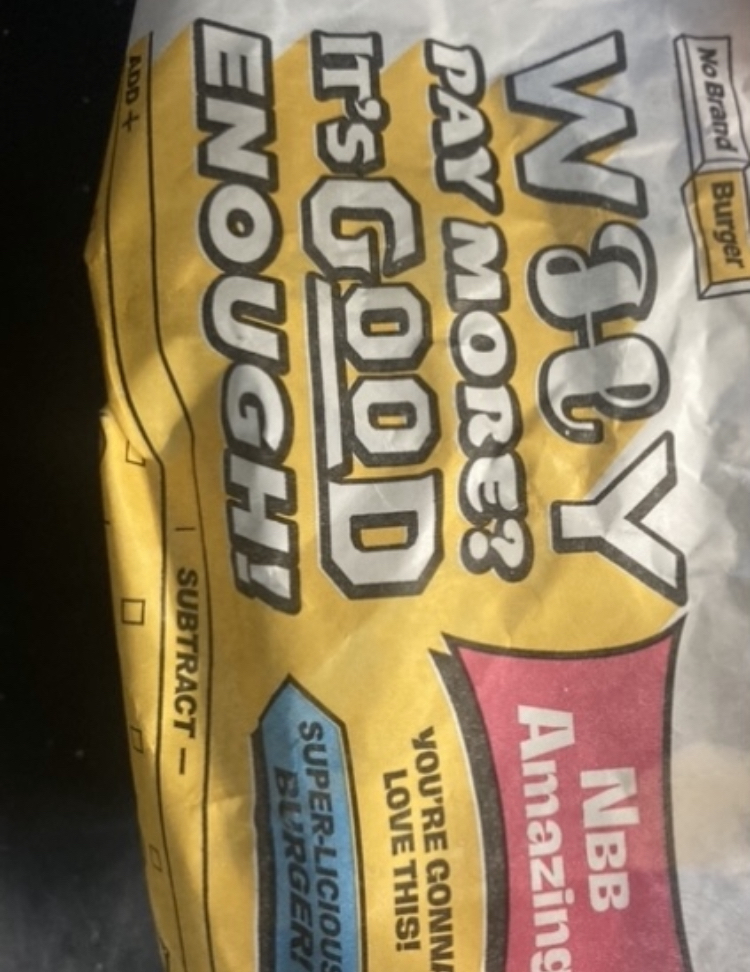
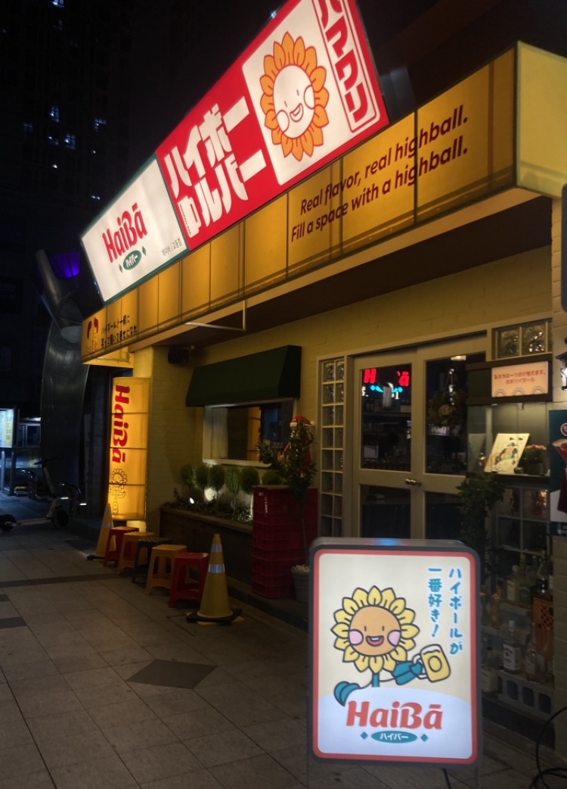
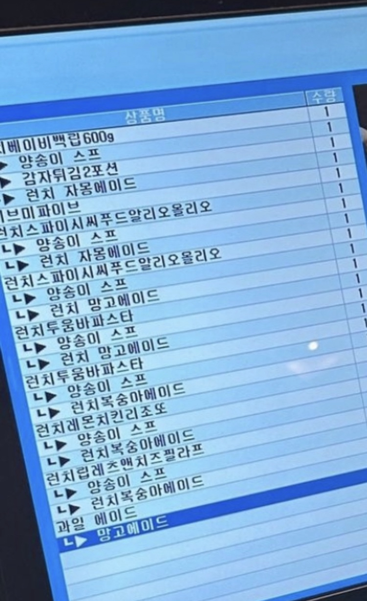
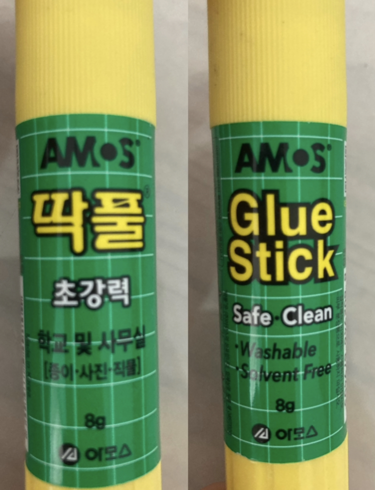
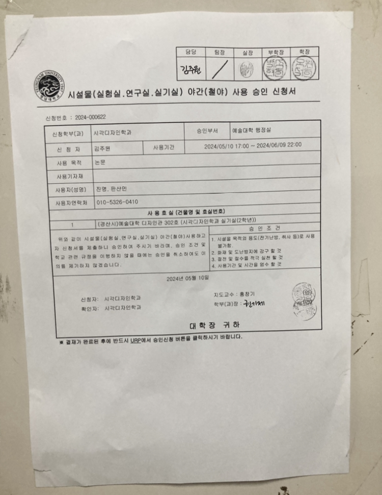
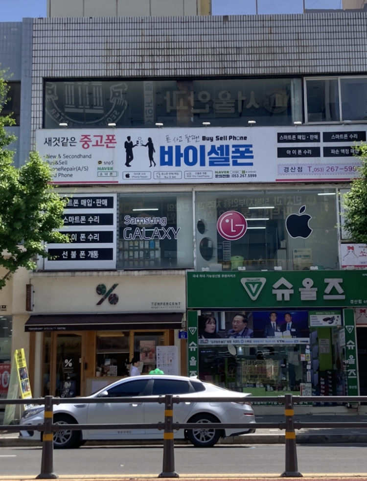
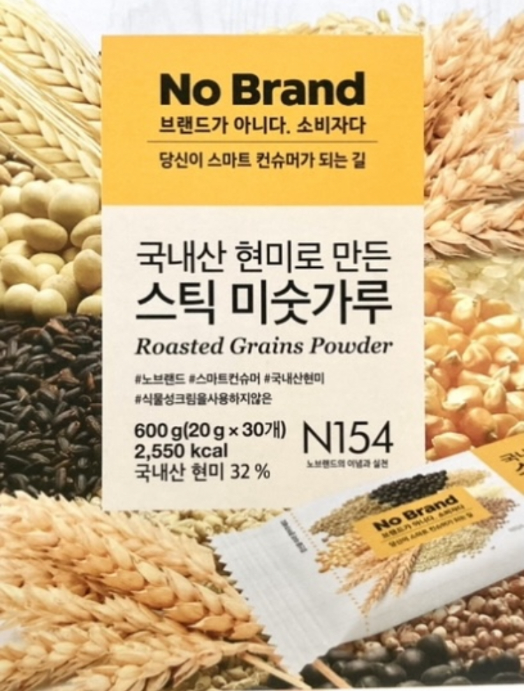
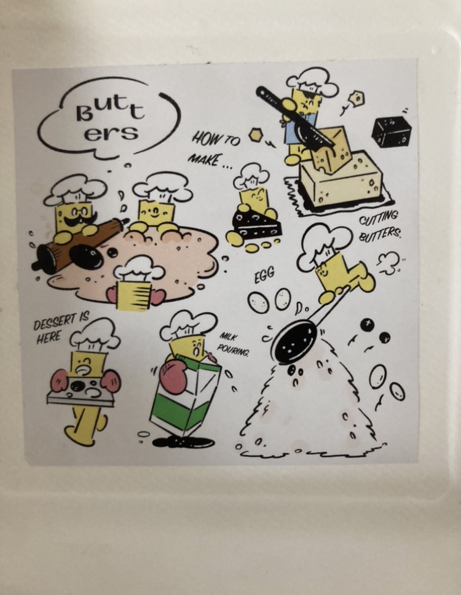
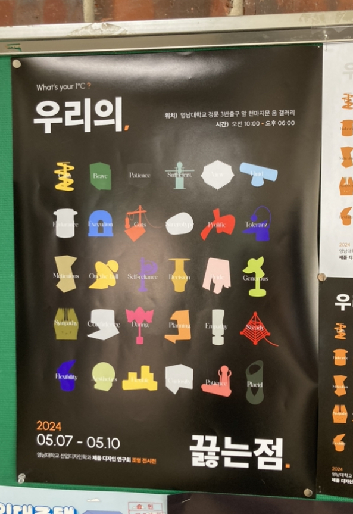

옆으로 화면을 스크롤 하세요.
Parking
맥도날드의 맥드라이브 입구에 있던 간판이다.‘맥드라이브’한국어로 적었지만, 주차장 ‘parking’인 영어로 적은 점에서 의문점을 느꼈다. ‘맥드라이브’도 어차피 영어발음을 한국어로 적은 건데 왜 굳이 저렇게 표기했을까? 맥도날드에는 저 간판 말고도 벽 실내장식, 메뉴판에 영어가 많이 적혀있는데 왜 가맹점 기업에서 영어와 한국어가 혼용되는 것인지 추측해본 결과 한국에서 영어 사용이 증가하면서 영어 표현이 상표의 이미지와 함께 국제적이기 보이도록 해주기 때문이다. 영어의 사용이 위와 같은 장점도 있겠지만 불필요한 사용은 영어를 모르는 사람들에게 혼란을 준다.
햄버거 포장지
노브랜드 햄버거의 포장지다. 노브랜드는 외국이 아닌 우리나라의 기업이다. 그럼에도 포장지에서 한국어는 전혀 찾아볼 수 없다. 위의 영어를 한국어로 해석하자면 이렇다. “돈을 왜 굳이 더 내는가? 이미 충분히 좋다.” 이다. 외국 기업인 맥도날드의 포장지에는 오히려 영어가 아닌 한국어로 메뉴가 표기되어있고 새우, 고기와 같은 삽화가 그려져 있다. 그러나 이 포장지의 경우, 메뉴마저 영어로 적혀있어 배달을 받고 햄버거를 나눌 때 헷갈린 경험이 많았다. 노브랜드는 가성비로 유명한 친근한 브랜드인데, 영어가 가득하다 보니 자칫 외국 기업처럼 느껴져 아쉬웠다.
술 가게 간판
일본 술집인 이자카야이다. 간판에는 일본어와 영어만 쓰였고 일본 느낌의 그래픽과 빨강, 검정, 노란색이 주로 사용되어 전통을 떠올리게 한다. 간판에 전체적으로 전등을 사용하여 밤에도 잘 보이게끔 한다. 이러한 문자의 이용과 디자인을 통해 사람들에게 새롭게 다가가며 훌륭한 마케팅 전략이 될 수 있지만, 술집 간판이 일본어로 되어있다 보니 해당 언어를 잘 알지 못하는 사람들에게 어색할 수 있고 일본 문화의 강조는 문화적 차별로 해석된다. 색다른 술집 실내장식으로 마케팅을 하려는 인식이 늘어나면서 요즘 시내를 돌아다니면 한국 느낌의 포차 술집보다 이자카야 술집이 더 많이 보인다.
식당 메뉴
위 메뉴 이름들은 모두 영어 발음을 한국어로 표기했다. 아무래도 외국 기업이고 음식 이름을 그대로 사용하다 보니 이러한 결과를 불러온 것 같다. 가족끼리 식당에 가 음식을 고를 때마다 위와 같이 적혀있어 어떤 맛인지, 어떤 재료가 들어가는지 가늠이 안 잡혀 고민하던 경험이 많았다. 음식을 설명하는 작은 문장들에도 영어 단어가 무분별하게 사용된다. 요즘 세대층은 영어 교육을 꾸준히 받아왔고 영어 사용에 자주 노출되다 보니 이해하는 데에 문제가 없었지만, 할머니, 할아버지께서는 언어의 장벽을 줄이기 어려웠다. 영어는 여러 국가에서의 공식적인 언어로 사용되기에 세계화한 이미지를 제시하기에 좋은 점이 있지만, 과연 모든 고객에게 편의성과 이해도를 제공하기에 충분할까?
우리말 옷
축제 중 부스를 구경하다 우리말 사용 캠페인 부스를 발견했다. 67주년을 맞아 행사를 진행했다. 재미있던 점은 67주년을‘67번째 돌맞이’ 라고 표기한 점이다. 한글사용을 도모하는 부스다 보니 최대한 한국어를 사용했다. 요즘 옷들에는 영어만 적혀있어서 한글이 적히면 어색할 것이라 생각했는데 막상＇우리말＇이라 적힌 후드티를 보니 예상외로 자연스럽고 멋스러웠다. 이러한 시도는 한글 사용의 포용성을 넓히는 좋은 시도이다.
딱풀
딱풀의 글자가 앞면에는 한국어, 뒷면에는 영어로 표기한다. 언어의 사용을 적절하게 잘 사용한 예다. 앞면에는 모든 단어가 한국어이기에 한국인이라면 단번에 이해할 수 있고, 외국인들은 뒷면 영어를 보고 풀의 기능을 알 수 있다. 이 디자인은 언어적 다양성을 존중하고 인식하는 메시지를 전달한다. 이는 다양한 문화와 언어를 포용하는 사회적인 가치를 강조한다.
공지
시각디자인과 강의실 문 앞에 붙여진 공지이다. 승인 받음을 알리는 공식적인 문서이다 보니 내용이 외국어의 사용이 적고 한글로만 적혔다. 사용된 단어들도 형식적이며 중요한 내용만을 전달하고 있기에 간결하다. 여기서 아쉬운 점은 한국어로만 쓰였다는 점이다. 우리 과에는 중국인 학생들이 많은 걸로 안다. 그들을 위해서 중국어로 된 공지서도 제작하여 언어적 장벽을 줄여야 한다.
가게 간판들
간판들 모두 영어를 한글로 표현한다. 한글이지만 뜻을 이해하기 힘들다. 가게 이름을 크게 중간에, 부가적인 설명들을 한국어로 적어 가 쪽에 배치한다. ‘바이셀폰’의 경우 영어와, 한국어 설명을 동시에 한다. 두 개의 언어 중 한국어에 검정 바탕, 하얀색 글자를 통해 더 가게의 기능성을 더 강조한다.
미숫가루
미숫가루 정보를 보면 한국어와 영어가 동시에 적절하게 배분된다. 브랜드 이름을 가장 두껍게 대비가 있게 사용하고 밑에는 한국어를 크게 표기하여 미숫가루임을 알리고 밑에는 작게 영어를 사용했다. 이는 다양한 문화적, 언어적 배경을 가진 사람들을 고려하는 제품서비스다. 다문화 사회에서 상호 이해와 협력을 촉진하는데 도움을 준다.
그림과 문자
구움 과자 가게에서 빵을 구매하고 받은 스티커다. 버터가 캐릭터가 되어 요리한다. 버터 옆에는 작게 영어로 행동을 설명한다. 한국어로 해석하자면, ‘어떻게 만드는가?’, ‘버터 자르기’, ‘여기, 구움 과자’, ‘우유 붓기’, ‘계란’ 이다. 한국어 대신 영어로 설명되는 경우 한국의 국제적인 이미지를 강화하고, 국제적 영향력을 확장할 수 있다. 영어는 국제적으로 표준화된 언어로서 지위를 가지고 있기 때문에 어느샌가 영어가 우리의 일상에 너무 많은 영향을 끼치고 있다. 충분히 한글로도 적힐 수 있는 내용임에도 불구하고 영어를 사용하는 것에 어떠한 이유가 있는지 다음 사진에서 이어 설명하겠다.
포스터
이 포스터는 영어가 작게 쓰이긴 했지만, 한글이 가장 크게 주목을 끌고 있다. 영어가 디자인에 자주 사용되는 이유는 다음과 같다. 영어는 널리 사용되는 언어이다 보니 최신 유행에 맞는 인상을 줄 수 있고 국제 시장에서 경쟁력을 갖출 수 있다. 두 번째로 영어는 다른 언어들에 비해 글자가 간결하고 시각적으로 더 효과적이다. 따라서 영어를 사용하는 디자인은 정보를 깔끔하게 전달하고 더 매력적이게 보인다. 대학 수업을 듣기 전 디자인에서의 영어사용을 당연하게 생각했지만, 다양한 타이포그래피 디자인들을 접하면서 한글로도 아주 멋진 디자인을 할 수 있다는 것을 느꼈다. 영어뿐만 아니라 다양한 다른 문자와 언어로도 디자인을 시도해보고 싶다.
? : 문자와 언어의 차이점
문자
문자는 언어의 기본 구성 요소로서 알파벳, 숫자, 기호, 키보드 기호, 이모지 등으로 이루어진다. 문자는 언어의 음윤을 나타내거나, 표현하고자 하는 개념을 기호화하여 전달하는 데에 사용된다. 고유한 의미나 소리를 가지지 않으며, 그 자체로는 의사소통에 사용되지 않는다.
언어
언어는 의사소통을 위한 체계적인 기호체계이며, 사람들 간에 의미를 전달하고 말이나 글을 통해 생각, 감정, 정보 등을 이해하는데 사용된다. 언어는 문법, 어휘, 발음, 문장 구조 등이 포함된다. 언어는 특정 국가나 지역, 문화에 따라 다양하게 발전하고 다양한 언어가 존재한다.
요약하자면, 문자는 언어의 구성 요소로서 특정한 소리나 의미를 가지지 않지만, 언어는 문자를 사용하여 의사소통을 위한 체계적인 시스템이다. 문자는 언어의 표현을 위한 도구로 사용되며, 언어는 의사소통의 목적을 달성하기 위한 매개체이다.